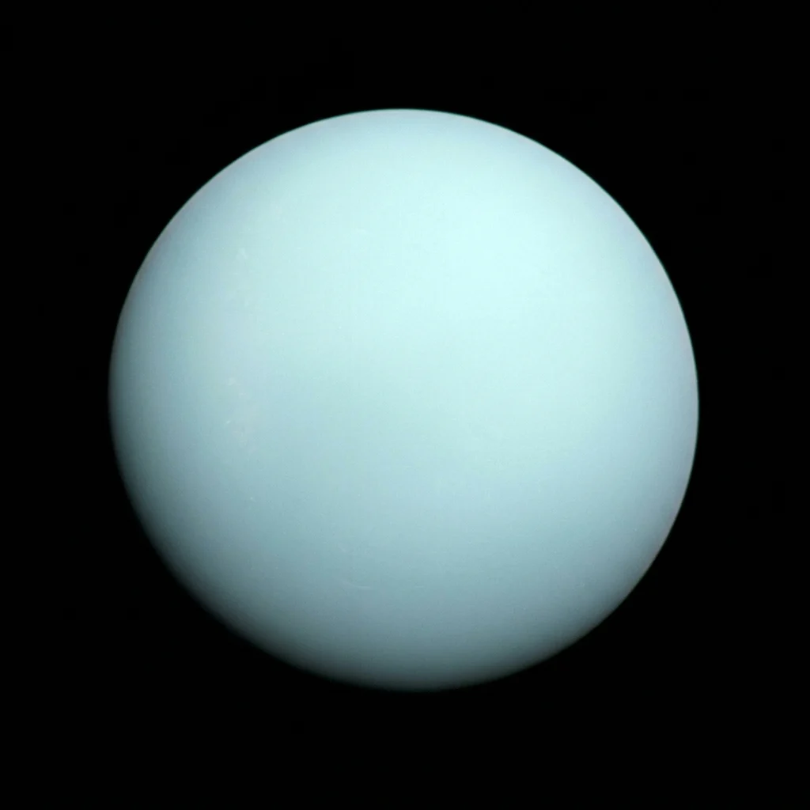

Foundational STEAM lesson for Uranus.
Uranus is the seventh planet from the Sun and the solar system's first ice giant. Distinct from gas giants like Jupiter, its bulk composition consists of a dense, slushy mantle of water, methane, and ammonia ices above a rocky core, rotated sideways on an extreme 97.8° axial tilt.
